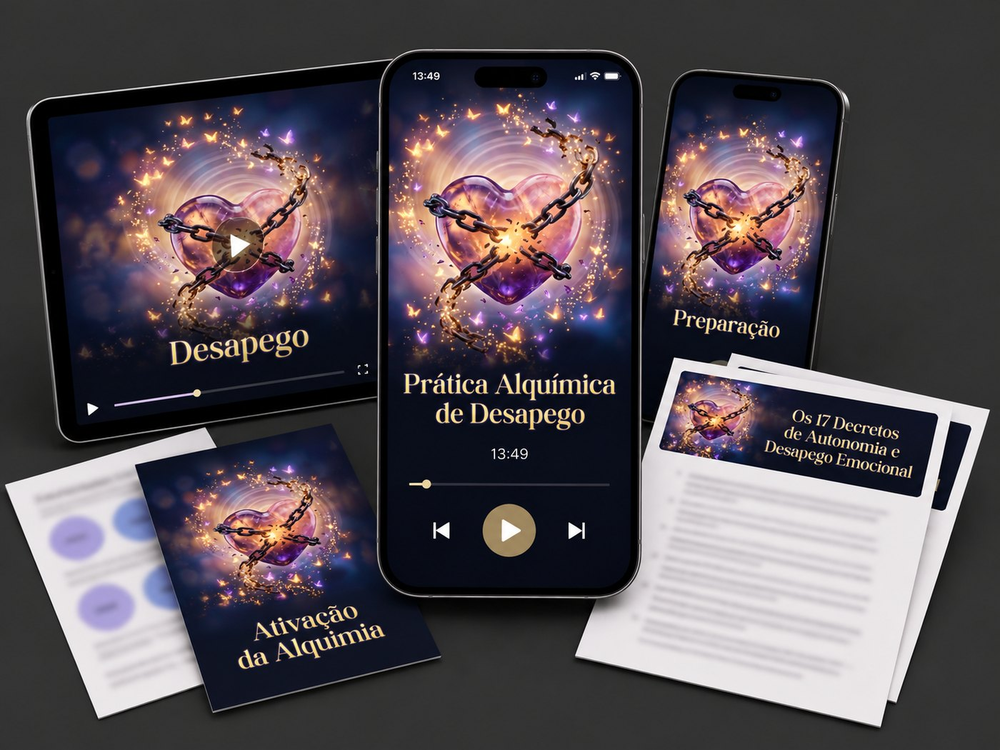
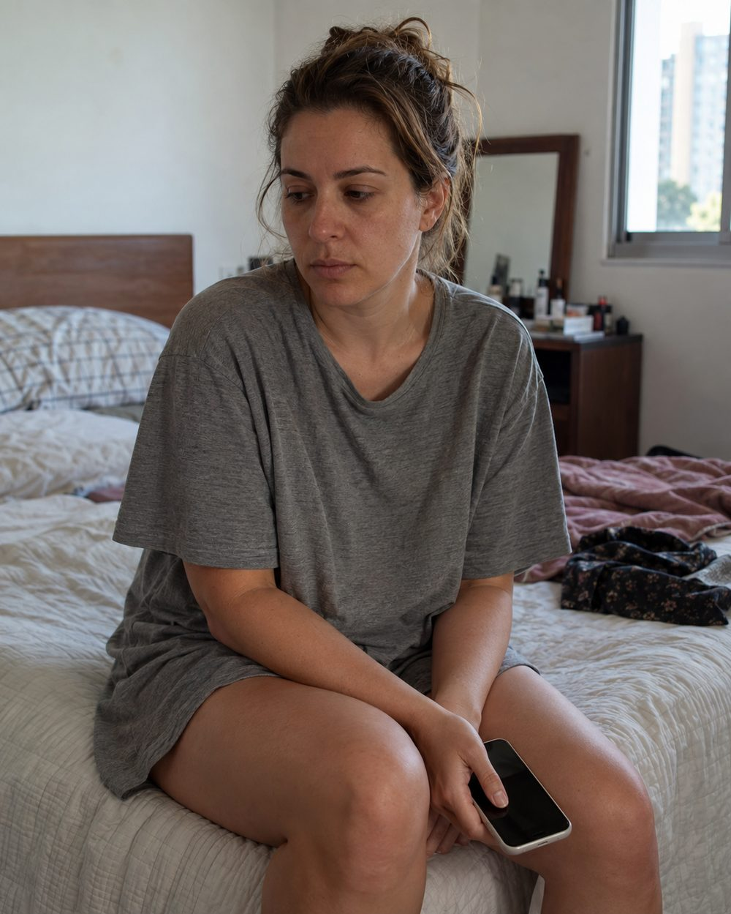
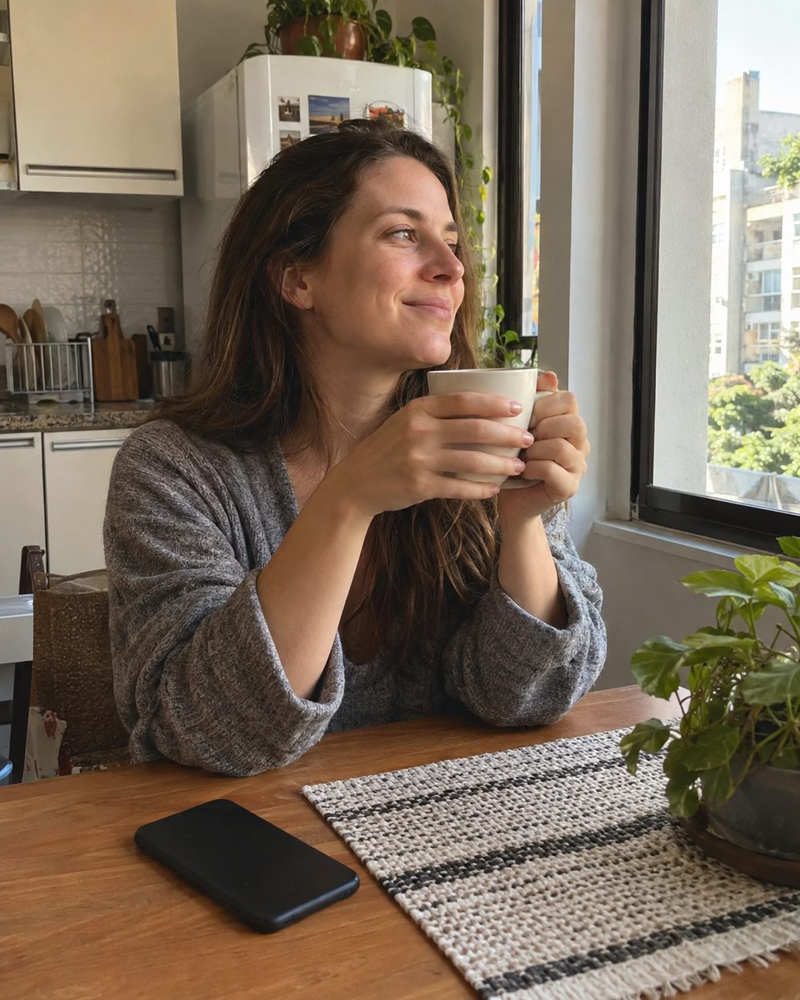
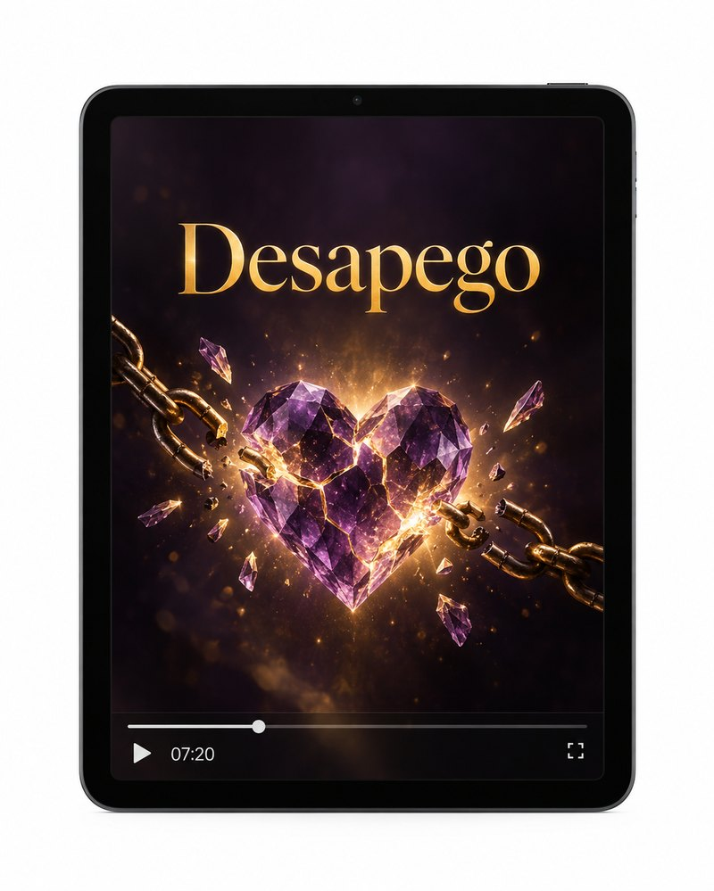
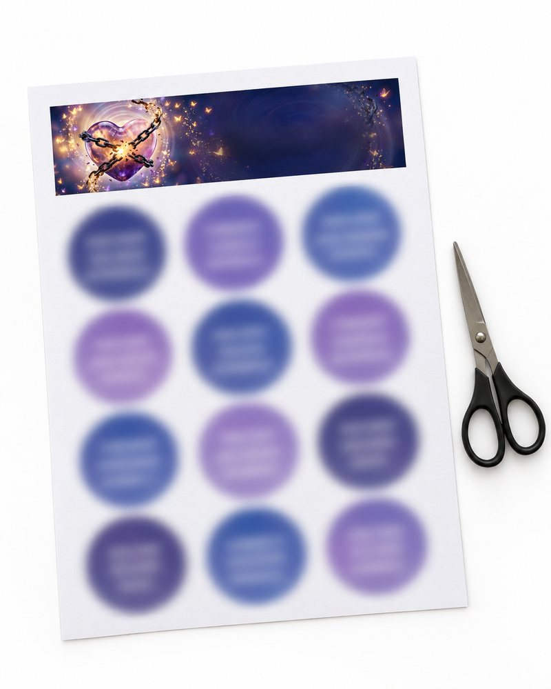
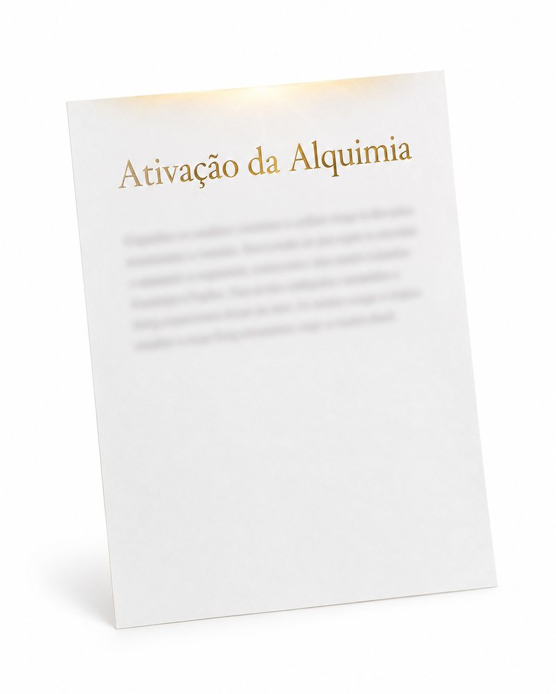
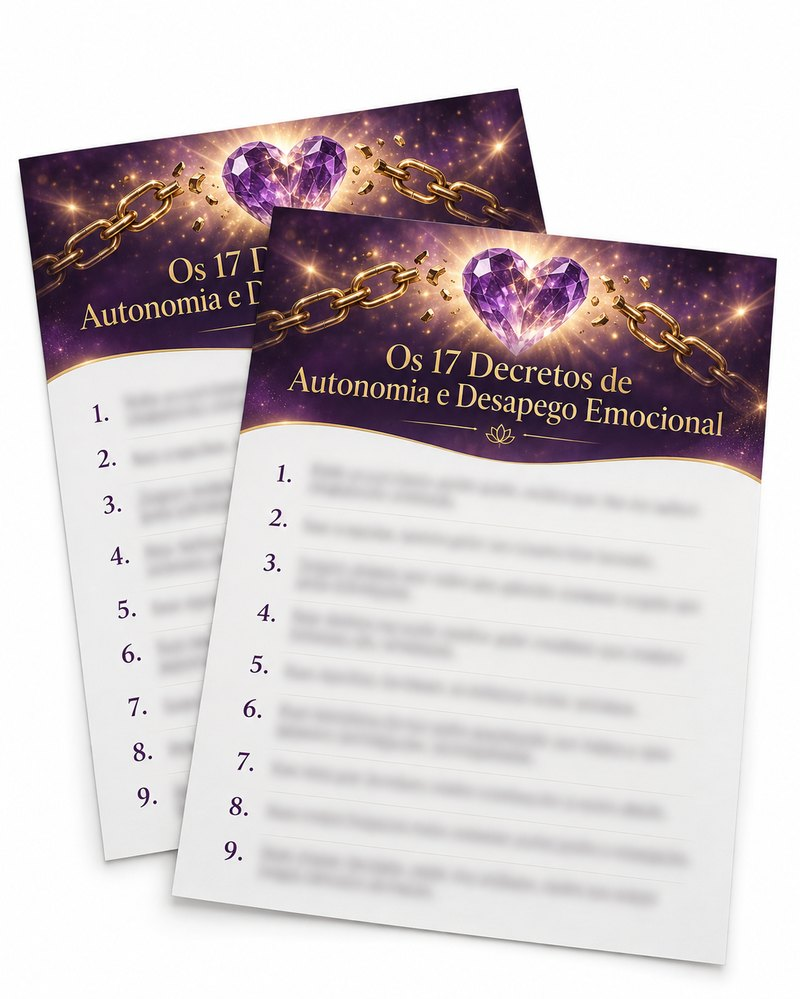

Por apenas
R$14912x de R$9,00ou R$87,00 à vista
Garantia de 7 dias · Acesso na hora · Pagamento seguro

Garantia de 7 dias. Se não for pra você, devolvemos.
Mulheres que passaram pelo trabalho da Escola de Alquimia Ascensional, com a Durga.
Por fora o dia passa. Trabalho, casa, resposta no grupo da família. Por dentro é isso aqui, o dia inteiro:

"Ele já seguiu a vida. E eu aqui."
"Sumi uma semana. Ele nem perguntou."
"Eu nem sinto raiva. Só queria entender por que ele não tentou."
"Parece que todo mundo consegue seguir em frente, menos eu."
"Acordo e ele já tá na minha cabeça. Tô exausta."
Se você leu isso e ficou quieta, tudo bem. Não precisa admitir nada pra ninguém. Ninguém vai saber.
Só uma pergunta. Se existisse um jeito de a cabeça parar de voltar nele, sem precisar entender tudo, sem precisar "superar", sem precisar estar forte, em 15 minutos por dia: você tentaria?
Se a resposta for sim, o Desapego de Uma Vez foi feito pra esse lugar.
Quase toda mulher que não consegue parar de pensar em alguém está rodando o mesmo ciclo. Ele tem cinco partes, e no meio de todas tem uma coisa só: a vontade de ser escolhida.
Alguma coisa que você precisava não veio. Atenção, presença, um lugar claro na vida dele.
"Dessa vez vai ser diferente." Você acha que falta pouco. Que se fizer uma coisa a mais, vira.
Você se dobra. Some pra ver se ele procura, responde na hora, engole o que ia falar.
Vem um pouco. Uma mensagem, uma noite, um "eu senti sua falta". E alivia. Alivia de verdade.
O alívio passa e a falta volta maior do que era. Aí o ciclo começa de novo, do 1.
Enquanto esse ciclo roda, a sua cabeça fica ocupada com uma pessoa só. Não é falta de força de vontade. É um ciclo. E ciclo se interrompe.
Repare numa coisa: não é ele que fica na sua cabeça o dia inteiro. É a lembrança dele. A conversa que você reprisa. A cena que você refaz com outro final. O que você ia dizer e não disse.
Toda vez que você lembra, aquela memória sai da prateleira e fica maleável por um tempo antes de ser guardada de novo. Lembrar sem fazer nada com isso guarda ela do mesmo jeito, às vezes mais forte. É por isso que passar o dia remoendo não alivia: você está reforçando, não soltando.
O Desapego de Uma Vez trabalha exatamente nesse ponto: soltar a força que aquela lembrança tem sobre você. Não é apagar o que aconteceu. Não é entender tudo outra vez. É soltar.
Pesquisadores acompanharam pessoas que tinham acabado de ser rejeitadas e ainda estavam apaixonadas. Elas passavam mais de 85% do tempo acordadas pensando naquela pessoa. Nos exames, ver a foto do ex acendia no cérebro as mesmas áreas de recompensa e fissura que acendem numa abstinência.
Fisher, Brown, Aron, Strong e Mashek. Reward, addiction, and emotion regulation systems associated with rejection in love. Journal of Neurophysiology, 2010.
E a neurociência da memória mostra, desde os anos 2000, que uma lembrança não fica gravada em pedra: quando ela é reativada, fica instável por uma janela de tempo antes de ser guardada outra vez. É nessa janela que a força dela pode mudar.
Linha de pesquisa conhecida como reconsolidação da memória, replicada em dezenas de estudos desde Nader, Schafe e LeDoux (2000).
Você não precisa entender nada disso pra prática funcionar. Está aqui só pra você saber que o que você sente tem explicação, tem nome, e tem ponto de saída.

Você escreve, num papel mesmo, o que vem quando ele aparece na sua cabeça. Tristeza, raiva, "e se eu tivesse feito diferente". Sem filtro. É a única hora em que você olha isso de frente, e leva uns cinco minutos.
13 minutos e 49 segundos. De preferência no mesmo horário, mas se não der, você faz quando der. Você dá play, fecha os olhos e a Durga conduz do começo ao fim. Não tem nada pra decorar nem pra "fazer direito".
É aqui que a maioria vê o tamanho da diferença, porque o que estava escrito já não bate com o que você sente. Se ainda tiver resto, dobra: 14 ou 21 dias. Os casos mais difíceis fecham em 21.
O nome dele para de aparecer no meio de tudo. Do banho, do trânsito, da conversa com a amiga.
A energia que ia toda pra ele volta pra você. Dá pra fazer as coisas de novo, e não só empurrar.
Olhar se ele viu, se postou, se está online, deixa de ser reflexo. E quando acontece, não derruba.
Dormir sem reprisar a conversa. Acordar sem ele já estar lá.
O coração do método. Um áudio guiado pela Durga que você repete todo dia por 7 dias, feito pra tirar uma pessoa da sua cabeça: aquela. Você dá play, fecha os olhos, e a Durga conduz. É isso que tira ele do meio da sua cabeça.

Por que entender que acabou não faz parar de sentir. A Durga explica, sem misticismo, por que a cabeça volta nele mesmo quando a razão já entendeu: é química. Quando você entende que é química, para de se chamar de fraca. E química se reconfigura.
Como fazer a prática do jeito certo: o horário, o lugar, o que escrever antes, o que fazer no oitavo dia. Pra ninguém começar errado e achar que não funciona.

Uma folha pronta com o símbolo que a prática usa. Você imprime, recorta e deixa do lado na hora de fazer. Pode parecer detalhe; quem faz sabe que não é.

O texto de uma página que abre a prática, com o seu nome e o nome dele. Dito uma vez, todo dia, antes de apertar o play.

Dezessete frases curtas, em primeira pessoa, pra ler em voz alta na hora da recaída. Quando dá vontade de mandar mensagem. Quando ele aparece no story. Quando são três da manhã. Uma delas: "Não preciso segurar o que quer ir embora." Outra: "Minha paz e a minha autonomia emocional valem muito mais do que qualquer desejo de receber migalhas."
Enfim. Se você se identificou com pelo menos dois desses, e quer que ele saia da sua cabeça sem precisar "ficar forte" primeiro, o Desapego de Uma Vez é pra você.
Mas hoje o Desapego de Uma Vez sai por bem menos que isso.

Por apenas
R$14912x de R$9,00ou R$87,00 à vista
Garantia de 7 dias · Acesso na hora · Pagamento seguro
Pagamento em ambiente seguro. Leva um minuto.
Em poucos minutos chega o seu login da área de membros. Vale checar o spam.
13 minutos, e o seu dia 1 dos 7 já está feito.
Durga Shakti Saraswati
criou o Desapego de Uma Vez
Eu já fui essa mulher. Sofri tanto com o término de um relacionamento que chorei todos os dias por seis meses. Na primeira semana a tristeza foi tanta que tive pneumonia. Toda a minha vida girava em torno dele, e quando acabou não tinha sobrado absolutamente nada. Eu só me recuperei em torno de um ano depois.
Foi desse buraco que veio o meu trabalho. São 18 anos ajudando mulheres a sair desse lugar, e hoje estou casada há 12 anos com o homem da minha vida, um companheiro que não é só meu amor, é também o meu melhor amigo. O Desapego de Uma Vez é o que eu queria ter tido naquele ano. Por isso ele é curto, é prático, e não pede que você esteja bem pra começar.
Mais um mês igual a esse. Acordar com ele na cabeça, checar o celular, sumir pra ver se ele sente falta, e à noite reprisar tudo de novo. Esperando o tempo resolver. O tempo sozinho não tem resolvido, né?
R$87 e 13 minutos por dia, começando hoje. No oitavo dia, reler o papel e ver que o que estava escrito já não bate.
Uma coisa precisa ficar dita antes do botão: isso não traz ele de volta. Não é pra isso. Se o que você quer é ele de volta, guarda o seu dinheiro.
E sobre ele ter "superado rápido": quem parece ter seguido em frente em duas semanas, na maioria das vezes, só está fugindo. Homem que não elabora volta a lembrar lá na frente. Mas isso é problema dele. O seu é parar de carregar ele na cabeça o dia inteiro. É isso que essa prática faz.
Eu sei, e você também sabe: a opção 2 é a mais inteligente.
Por apenas
R$14912x de R$9,00ou R$87,00 à vista
Garantia de 7 dias · Acesso na hora · Pagamento seguro
Tem. 7 dias. Se fizer a prática e sentir que não é pra você, pede o reembolso e recebe tudo de volta. Sem pergunta.
A prática tem 13 minutos e 49 segundos. Mais uns cinco pra escrever no primeiro dia e no oitavo. As outras aulas somam 18 minutos e você assiste uma vez só.
Aí espera. A prática não traz ninguém de volta e não é pra quem quer isso. Ela é pra quem quer que ele saia da cabeça. Se as duas coisas estão brigando aí dentro, o que costuma acontecer é o seguinte: quando a cabeça esvazia, a resposta aparece sozinha.
Não. Soma. A terapia trabalha pelo entendimento; a prática trabalha na parte que continua sentindo depois que você já entendeu. Não substitui tratamento nem acompanhamento, e não é pra isso.
Não. Precisa apertar o play e ficar 13 minutos de olho fechado. O resto a Durga conduz.
Faz mais 7. Muita gente resolve em 7; os casos mais difíceis fecham em 21. Está tudo explicado no guia de preparação.
Serve. Se foi mês passado ou há três anos, não importa: o que a prática trabalha é o que ainda está aí, não a data.
É. Namoro, casamento, relação que nunca foi assumida. Se tem uma pessoa específica que não sai da cabeça, é pra isso.
Por e-mail, em poucos minutos, com o acesso à área de membros. Assiste no celular ou no computador, quando quiser.
É. O pagamento é feito em ambiente seguro e criptografado, e os seus dados de pagamento não passam pela gente.